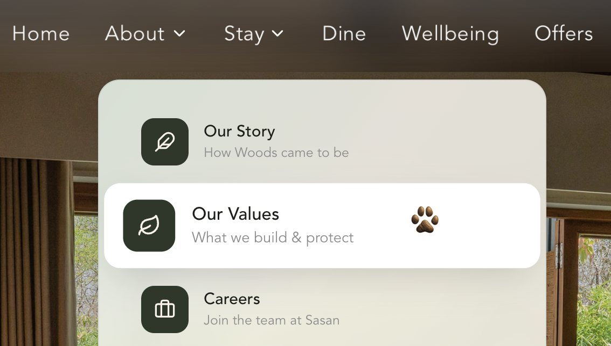
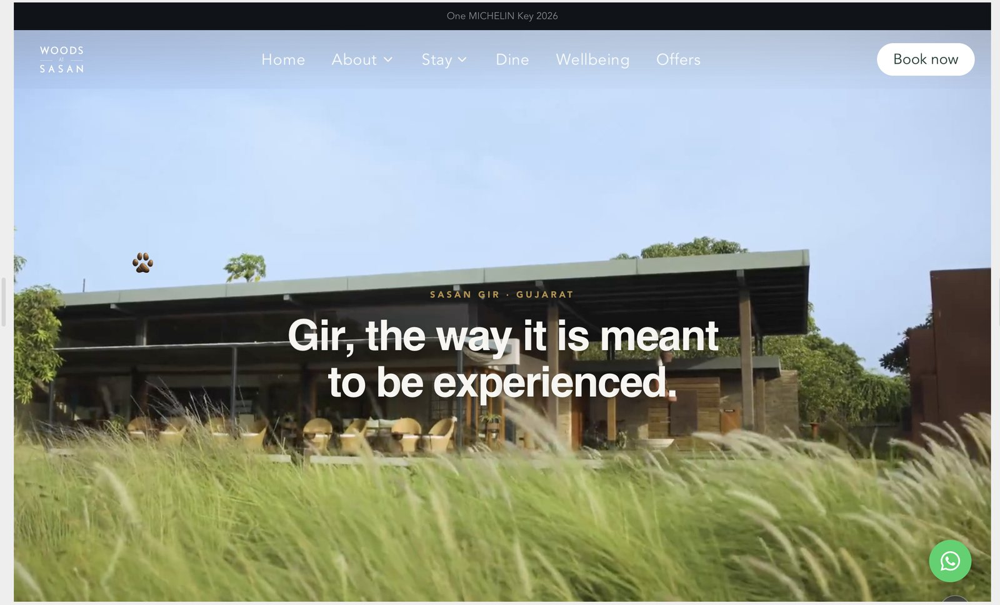
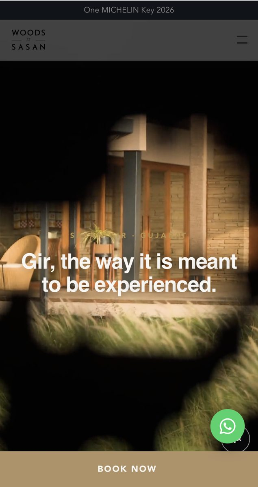
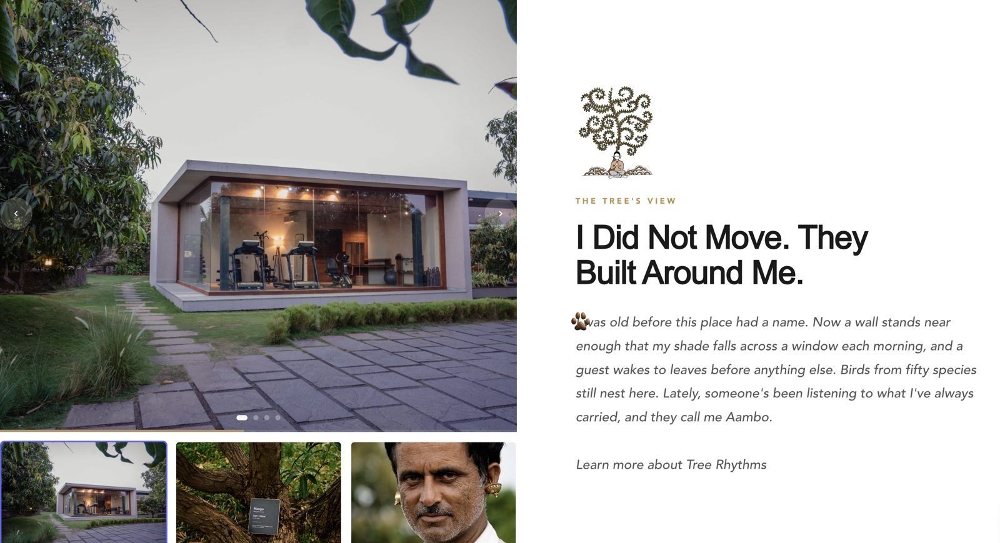
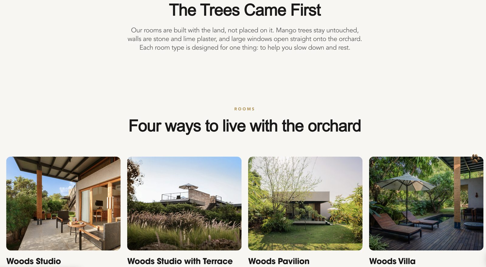

Woods at Sasan: the website, built end to end.
Woods at Sasan is a biophilic, regenerative property in Sasan Gir, Gujarat, awarded one Michelin Key in 2026 and operated under 1000 Island Hotels & Resorts. I took its website from brief to launch, and I handle all of its marketing activities, end to end.
See the websiteA five-star property with a website that did not look like one.
Before the rebuild, the site was working against the property in four ways.
Design
A weak visual design that did not match a high-end, five-star property.
Code
An outdated build underneath, slow to work with and hard to improve.
Conversion
No visible call to action. A visitor who wanted to book had nowhere obvious to go.
Operations
No content management system, so every update or addition took a long time to turn around.
One site, four principles.
I wanted a CMS-based website that reflects the property's philosophy and stays easy to edit and extend. I found two designers through my network, briefed them in detail, and led the design through to launch. Four principles ran through every decision.
Experience-heavy, not content-heavy
Visuals carry the story. Copy stays short and earns its place.
One call to action
Every page points the visitor toward a single action: Book now.
Mobile first
About 90% of traffic arrives on phones, so the phone layout came first and the desktop followed.
Accessible through simplicity
A plain structure, short paths and one obvious next step.
Benchmarking before drawing a single page.
To decide which pages the site needed, I studied three groups of properties and compared how each structured its site.
Oberoi, Taj and peers
The reference point for how a five-star Indian brand presents itself online.
Postcard
The closest comparison for the same guest, so the most useful place to see what to match and what to avoid.
Michelin Key hotels
Properties from across the world, studied to understand what the best in the category treat as essential.
The output of the research was the list of key pages the site would need. That list became the structure below.
One navigation. A homepage where every section has a reason.
The primary navigation is short, and Book now stays in view on every page: as a button in the navigation on desktop, and as a sticky bar on mobile.
- Home
- About
- Stay
- Dine
- Wellbeing
- Offers
- Book now

The homepage, section by section
Each section is documented with the reason it exists. Where a decision went against convention, the UX decision is recorded too.
Navbar
Hero
Full-bleed image or film.
The first three seconds build desire. A button at this moment interrupts the feeling, and visitors who feel something first convert better than those pushed immediately.
Deliberately no call-to-action button inside the hero. Competitors all put Book now there; we do not, and that restraint is part of the brand signal. The long paragraph from the brand document is good writing, but it belongs on the About page. In a hero, long copy competes with the image and loses. The job of the hero is one thing: make the visitor feel something and keep scrolling. The headline does that.
Season selector
Four subtle tabs below the hero: Summer, Monsoon, Winter, Spring. Choosing one refreshes the hero image and the Pathway feature to match.
A guest planning a winter trip sees winter content at once. The homepage becomes interactive and personal without adding complexity.
Three pillar cards
Stay, Experience, Pathways. Three equal-weight cards, each with one image and one line, linking to its section.
Pathway highlight, seasonal
One featured seasonal pathway with an image, a name, a one-line intent and a Discover link. Rotated each quarter from the admin panel.
Residency spotlight
The current resident: short copy, one strong image, a link to the Residency section.
Trust bar
IGBC Platinum, GOPCA certification and press logos in a horizontal strip.
Mid-page trust catches visitors before they leave. At this point they are interested but not committed, and third-party validation turns interest into intent.
Gallery
Six to eight images in a grid or horizontal scroll: the orchard, a dining setting, a room interior, a safari moment, a session in the space, a cultural experience. No captions, no labels.
A guest making a significant emotional decision needs to see the place from several angles before committing: the food, the room, the wildlife, the people. The gallery meets that need without sending the visitor off to individual pages.
No captions. Captions pull the visitor into reading mode and break the visual experience; the images speak for themselves. On desktop, an asymmetric masonry grid reads as editorial rather than as a hotel photo-gallery template. On mobile, a horizontal swipe keeps it tactile and fast. Each image links to the relevant section: the room to Stay, the safari to Plan Your Gir Safari, the dining image to Dine. The gallery is visual proof, and it is also a navigation tool.
Testimonials
Two or three guest quotes, with first name, origin city and the type of stay. No star ratings.
This converts a visitor who is interested but not yet convinced. Social proof at this exact point in the scroll reduces hesitation before the booking call to action.
No star ratings and no review-platform logos. Stars read like a booking aggregator, which is the wrong register for this brand. First name and city only: the quote is the proof, not the source. One quote per stay category where possible (a Studio guest, a Pathway guest, a Safari guest), so every type of visitor sees themselves reflected.
Call-to-action section
A full-width section with one strong headline and one or two lines of supporting copy.
By now the visitor has seen the pillars, the pathway, the residency and the testimonials, and is ready to act. This section catches that moment of peak intent before the scroll reaches the newsletter or footer. Without it, the conversion moment is missed.
Newsletter sign-up
One line, one email field. No pop-up.
Footer
Experience first, copy second.
The site is visual by design. The headline and the film do the work in the first screen, and everything below is sequenced to lead toward Book now.


Two pages, two jobs
The same rule runs below the homepage, on the About and Stay pages: the picture leads, the words stay short, and the page has one clear next step.


A paw for a cursor
The cursor across the site is a small paw print, a link back to the lions of the region. It is a quiet detail, and it ties the interface to the place it describes.
From wireframe to page
The homepage blueprint in section 04 began as a Figma board: every section drawn as a labelled block, with its reasoning and its UX decision set beside it. It is set out above as text, so the decisions stay readable on any screen and with a screen reader.
The film
I commissioned the brand film through the barter residency program. A videographer from my network made it at no cost in exchange for a residency. I judged early that a key film would define the site's visual treatment, so the hero was designed around it from the start.
Built in Framer, wired together by me.
The site runs on Framer with a CMS, so content such as the seasonal pathway can be changed from an admin panel without touching code. I learned the platform and connected everything around it myself.
Manage
- Framer CMSContent and the quarterly pathway rotation, edited from the admin panel.
Measure
- Google Tag ManagerTag container for the site.
- GA4Analytics and reporting.
- Meta PixelTracking for paid social.
Convert
- STAAH booking engineWhere a self-serve booking is completed.
- WhatsAppDirect enquiry from any page.
One operator, three channels.
Since launch I have run the performance marketing for the site myself. Three paid channels ran side by side, and two paths lead from them to a booking.
- 31 JulyThe website goes live.
- End of AugustEvery integration connected.
- SincePerformance marketing run end to end by one person.
How the campaigns were structured
Meta, YouTube and Google Ads
All three ran in parallel rather than in sequence.
Lookalike audiences
Prospecting aimed at people who resemble the ones already responding to the property.
Remarketing
Follow-up for visitors who came to the site and had not yet booked. The tracking in section 06 is what makes it possible.
Connected to the booking journey
Google Hotel Center
Integration set up, connecting the property to Google hotel search.
STAAH booking engine
I optimized its look and feel to define the guest experience and turn visits into bookings.
Two paths to a booking
Self-serve
- Discover
- Website
- Book now
- STAAH booking engine
- Booking
Enquiry-led
- Discover
- Website
- WhatsApp enquiry
- Marketing filters
- Sales conversation
- Booking
Enquiries come straight to WhatsApp, which keeps every enquiry a real conversation. Marketing captures each one, answers the basic questions and passes it to sales. The typical response window is 12 hours, and the handover is manual today.
What the data changed
Meta and Google both performed as expected. As results came in, I kept refining the geographic targeting.
Since launch.
- Blended ROAS
- 11x+
- Business generated
- ₹20 lakh+
- Ad spend
- ₹1.5 – 2 lakh
- Bookings
- ~30, direct and sales-assisted
- Enquiries
- Hundreds of leads
- Website sessions
- 1.54 lakh
- Organic impressions
- 64K
- Live since
- 31 July
Blended ROAS is business generated divided by ad spend over the same period since launch on 31 July, across direct and sales-assisted bookings. ROAS is shown as measured; spend and revenue are shown as ranges for the property's privacy.
Traffic decided what stayed.
After launch, traffic showed which sections earned their place. Pages and sections with little traffic were removed or reworked. Sections with high traffic were improved visually and sequenced so the scroll leads naturally to the final Book now call to action.